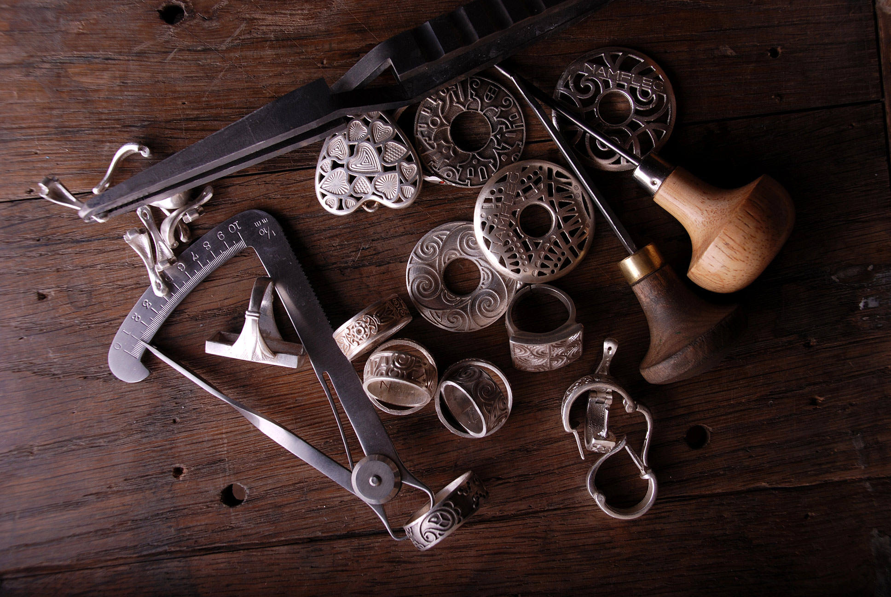
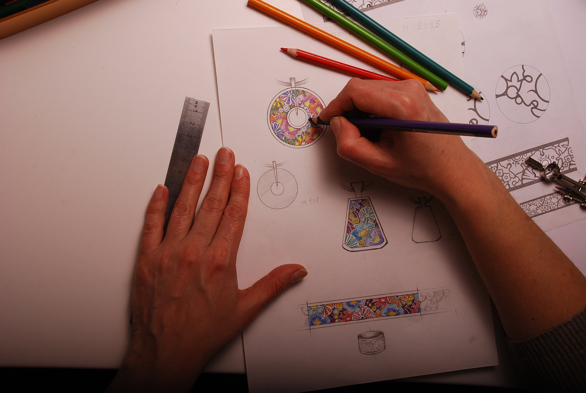
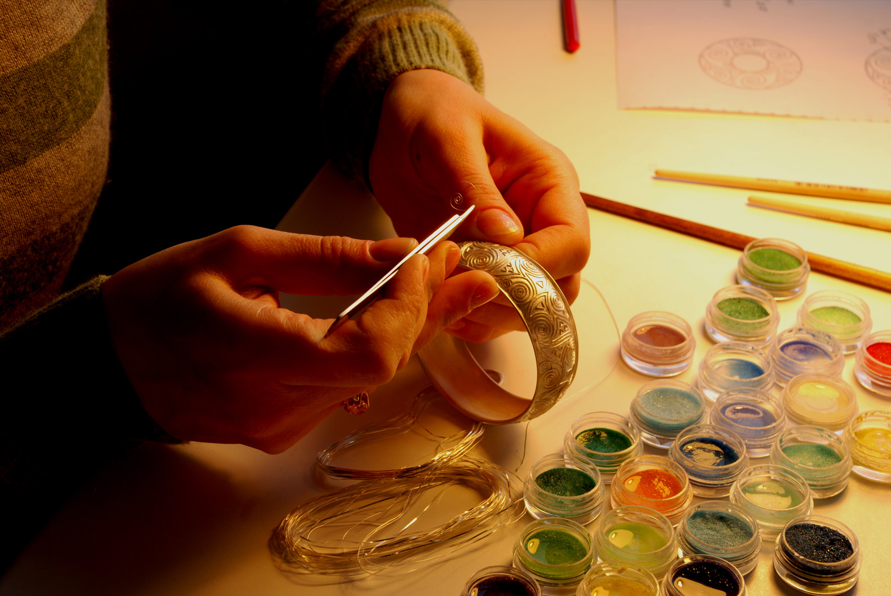
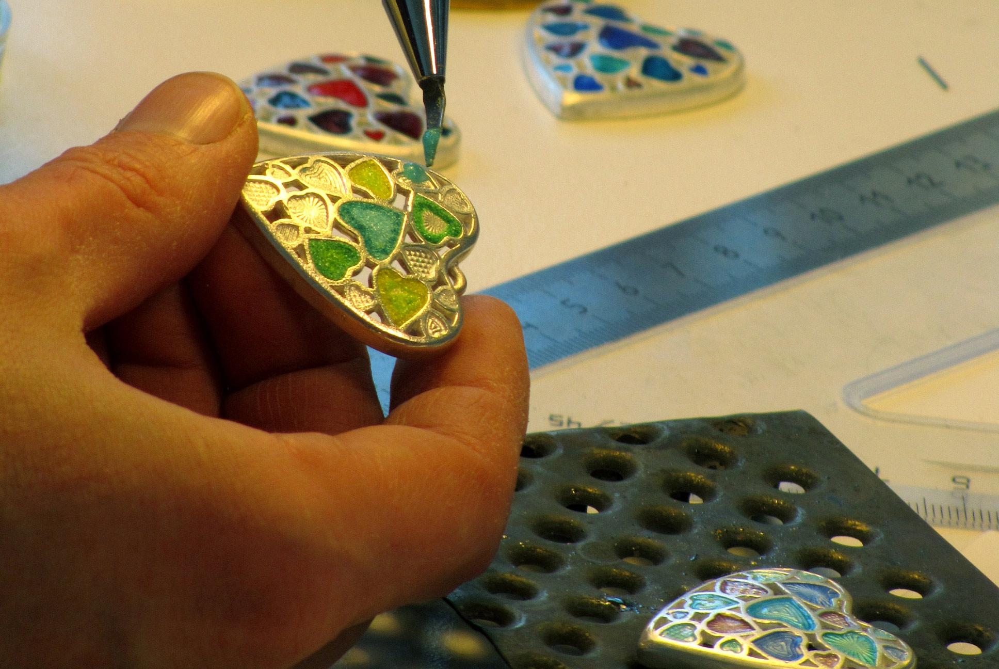
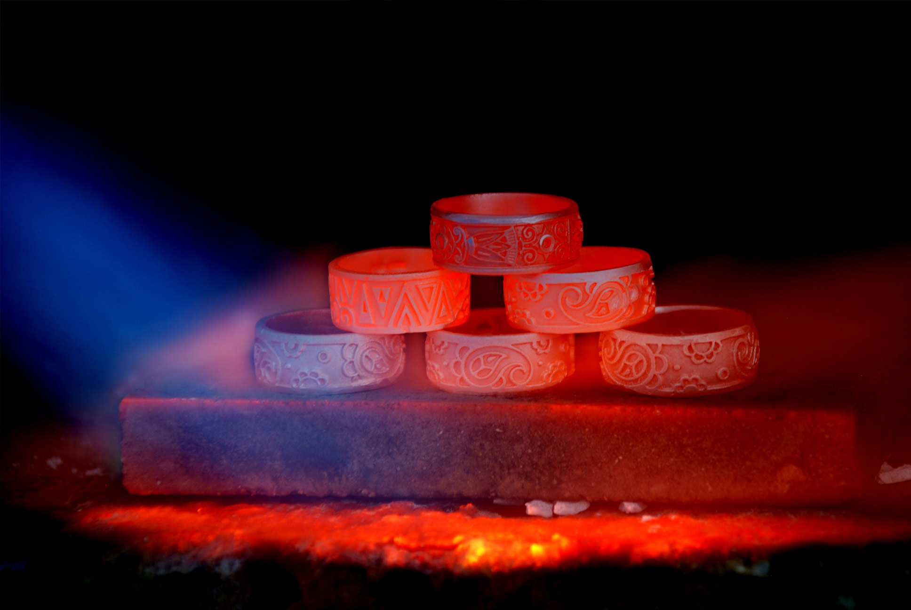
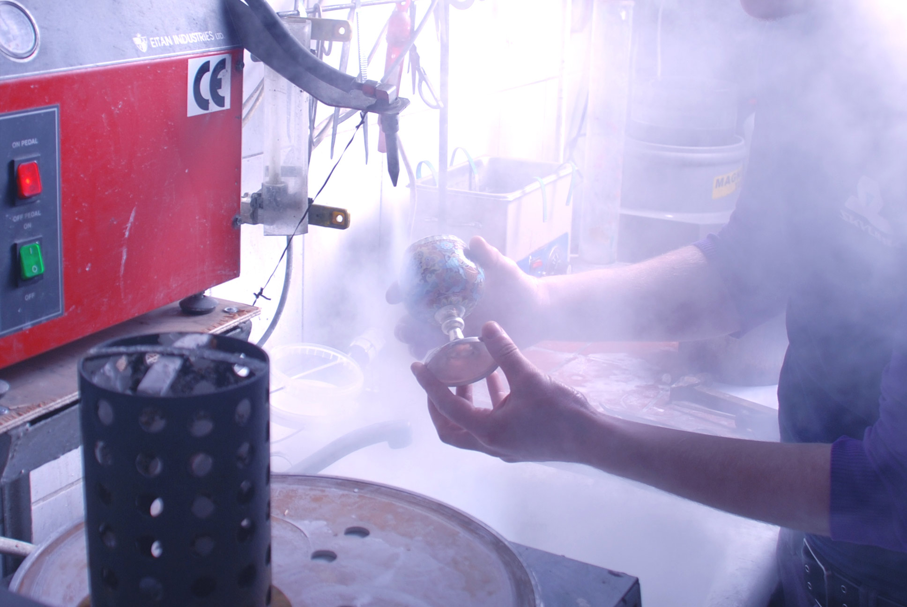
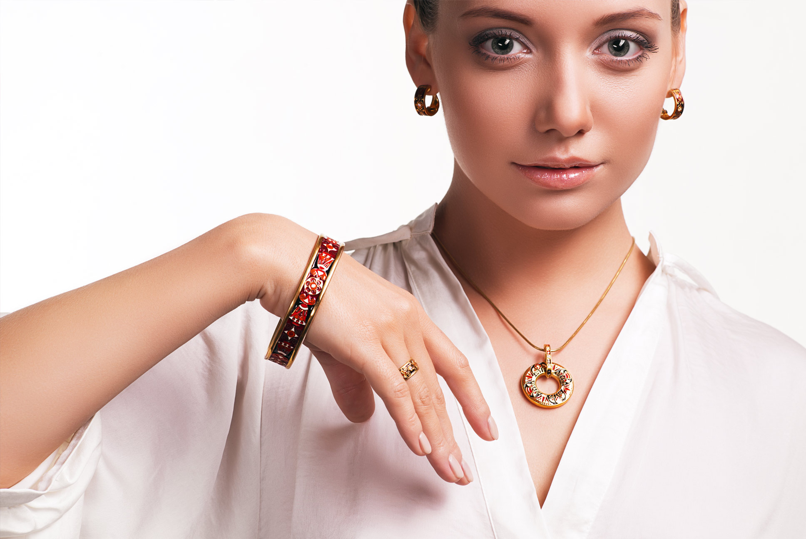

-

Как все устроено
Ювелирные украшения «Намфлег», выполненные в технике горячей эмали, продолжают традиции египетских, византийских художников мастерской Карла Фаберже. Как и тогда, все украшения создаются вручную высококвалифицированными мастерами.
Идея
и эскиз → -

Идея и эскиз
Работа над изделием начинается с изготовления эскиза, вдохновением для которого служат шедевры мировой живописи и архитектуры. Уже на основе рисунка создается восковая модель, которая станет прототипом изделия.
Литье и установка
серебряных
перегородок → -

Литье и установка серебряных перегородок
По созданному ранее эскизу мастер отливает изделие из драгоценного металла и с помощью тончайшей серебряной или золотой проволоки создает перегородки, формируя оригинальный рисунок изделия, и припаивает перегородки на украшение.
Нанесение
эмали → -

Нанесение эмали
Подобранные на этапе эскизов эмалевые плиты крошат и делают цветовые пробы на серебре. На следующем этапе мастер закладывает эмаль в углубления рисунка и отправляет получившееся украшение в муфельную печь.
Обжиг → -

Обжиг
Изделия с эмалью обжигаются в муфельной печи при температуре 800 градусов. Эмаль равномерно заполняет ячейки, превращаясь в цветное стекло, неподвластное воздействию времени. Во время обжига эмалевый слой опускается ниже перегородки, поэтому для полного заполнения ячейки требуется нескольких десятков таких операций.
Шлифовка
и гальваника → -

Шлифовка и гальваника
Завершающие шаги – полировка изделия. Именно на этой стадии украшение приобретает несравненный блеск и игру света. Для сохранения внешнего вида изделие покрывается золотом или родием.
вы одеваете
его на руку → -

Вы надеваете его на руку
Держать в руках и носить украшения, созданные в этой технике, раньше могли только избранные. В современном мире эта возможность стала доступна многим, но оценить подобные изделия могут только те, кто по-настоящему ценит красоту и работу ювелирных мастеров.
← Заново
8 495 518-11-09